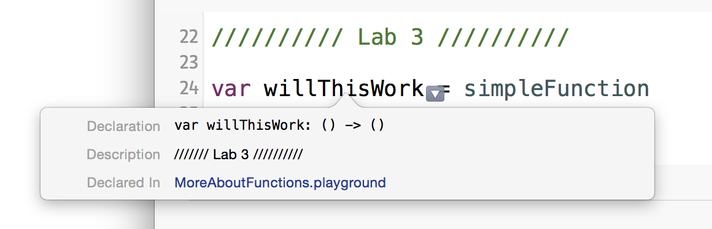
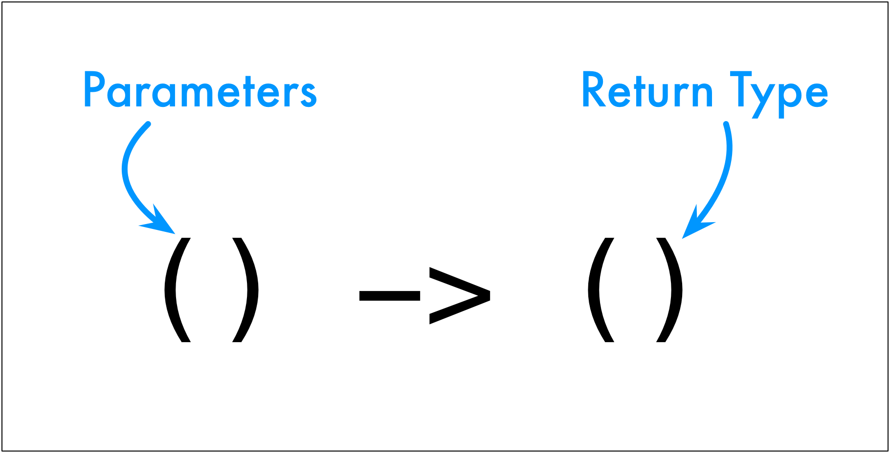

Output:
1 2 | I'm the simple function!
I'm the simple function!
|
That works! What is going on?
It's simple, functions in Swift are first class data, they're just like any data. We can assign them to variables, use them in parameters, add them to collections, and most everything else we do with variables.
And they have a type.
Do you remember how to see the type of a var in Xcode or in a playground? We Option-click on it. Try that with the willThisWork variable. You should see this.

The type is () -> ()

Let's make another function with some parameters.
1 2 3 | func addThese(first: Int, second: Int) {
println("\(first) plus \(second) is \(first + second)")
}
|